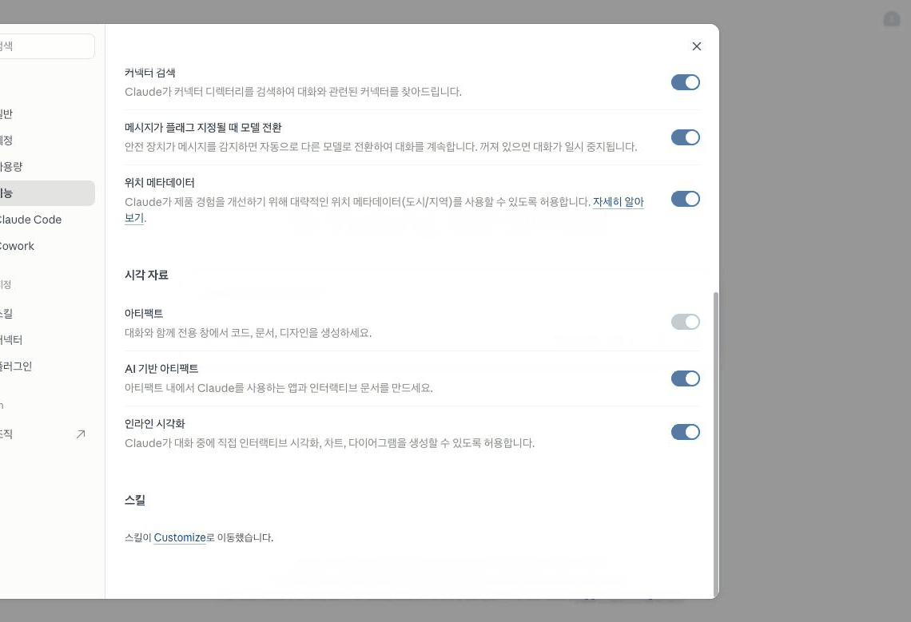
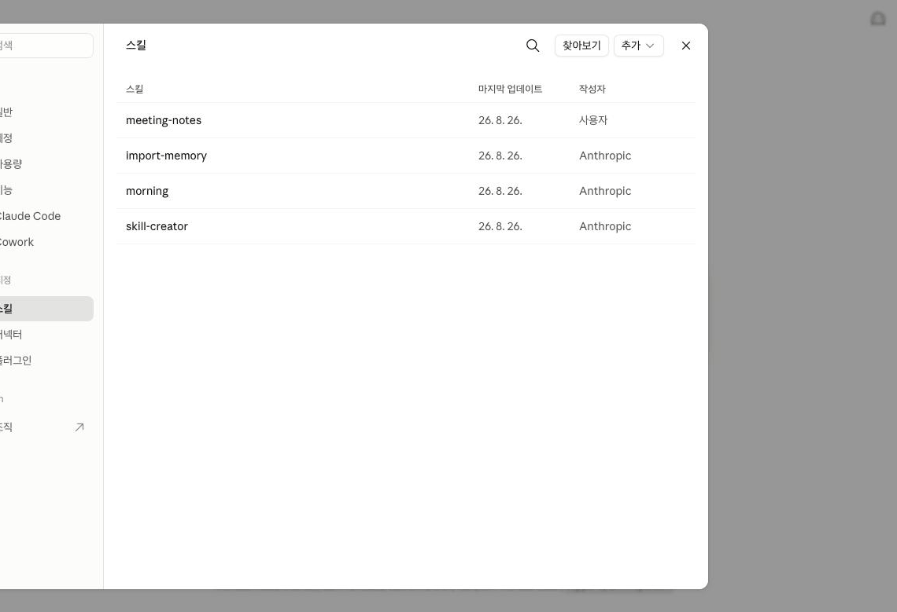
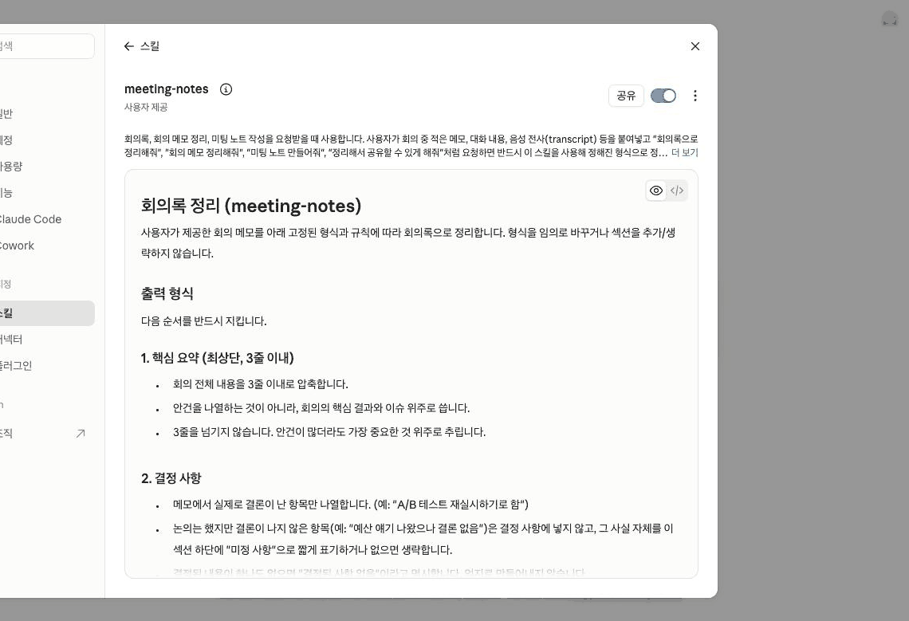

Claude · 중급 · 모듈 02
모듈 01의 계정 지침이 모든 대화에 실린다면, 스킬은 필요할 때만 불려옵니다. 파일을 직접 쓰지 않고 대화만으로 나만의 스킬을 만들어 봅니다.
이 모듈을 마치면 다음을 할 수 있습니다.
| 항목 | 내용 |
|---|---|
| 필요 플랜 | Pro 또는 Max. code execution 활성화 필요(3-3). |
| 설치 | 불필요. |
| 사전 지식 | 중급 01 수료. 9단계에서 만든 "어디에 둘지 판단" 목록을 이 모듈에서 씁니다. 초급 05의 아티팩트 경험도 필요합니다. |
| 준비물 | 별도 준비물 없음. 이 모듈이 안내하는 대화형 생성 경로는 "스킬 저장" 버튼 한 번으로 끝나 ZIP 압축이 필요 없습니다. SKILL.md를 직접 손으로 고쳐 다시 올리고 싶을 때만 파일을 ZIP으로 압축할 수 있는 환경(운영체제 기본 기능으로 충분)이 필요합니다(6단계 참고). |
| 예상 사용량 | 프롬프트 4회. 스킬 생성은 Claude가 파일을 만들어야 해 일반 대화보다 많이 씁니다. |
아래 표는 2026-08-20 시점에는 공식 자료 미확인으로 남겨뒀던 두 항목을, 실제 claude.ai 화면(Team 플랜 계정)에서 라이브로 클릭해 확정한 결과입니다. 특히 "스킬 관리 화면"은 계정 메뉴가 아니라 왼쪽 사이드바에 상시 노출된 "사용자 지정" 메뉴였고, "스킬 추가 버튼"은 "+ Create skill" 한 개짜리 버튼이 아니라 "추가" 드롭다운(하위 3개 항목)이었습니다. 아래 5장의 실습 단계는 이 확정된 명칭 기준으로 다시 썼습니다.
| 이 문서에서 부르는 이름 | 확인 상태 |
|---|---|
| "설정" > "기능" | 확인됨 (출처: support.claude.com/ko/articles/9487310, 2026-08-20 확인) |
| "코드 실행 및 파일 생성" | 확인됨. 단, Free·Pro·Max 화면 기준(3-3 참고) (출처: support.claude.com/ko/articles/9487310, 2026-08-20 확인) |
| "사용자 지정" 영문 원표기: Customize | 확인됨 — 왼쪽 사이드바 최상단 메뉴 목록(새로 생성/프로젝트/아티팩트/예정됨 아래)에 독립 항목으로 상시 노출됩니다. 클릭하면 "설정" 패널이 열리고 그 안에 "사용자 지정" 그룹으로 "스킬"·"커넥터"·"플러그인"이 있습니다. (라이브 화면 검증: 2026-08-26) |
| "스킬" 화면 영문 원표기: Skills. 도달 경로: 사용자 지정 → 스킬 | 확인됨 — 표 형태 목록(스킬명 / 마지막 업데이트 / 작성자)이며, 우측 상단에 "찾아보기"와 "추가" 두 버튼이 있습니다. (라이브 화면 검증: 2026-08-26) |
| "추가" 드롭다운 하위 항목: "스킬 업로드" / "스킬 만들기" / "Claude와 함께 창작하기" | 확인됨 — 원래 문서가 가정한 "+ Create skill" 단일 버튼이 아니라, 클릭 시 3개 항목이 펼쳐지는 드롭다운입니다. ZIP 업로드는 "스킬 업로드", 대화형 생성은 "Claude와 함께 창작하기"에 해당합니다. (라이브 화면 검증: 2026-08-26) |
| 플랜 | 어디서 켜는가 | 누가 |
|---|---|---|
| Free·Pro·Max | "설정" > "기능"의 "코드 실행 및 파일 생성" | 본인 |
| Team | 조직 수준에서 기본 활성 | 추가 조치 불필요 |
| Enterprise | 조직 설정의 Skills에서 두 항목(코드 실행 및 파일 생성, Skills) | Owner만 |
Enterprise 사용자는 본인이 켤 수 없습니다. 초급 05에서 아티팩트를 켤 때와 같은 상황이므로, 그때 쓴 관리자 요청 문구를 재활용하면 됩니다. (출처: support.claude.com/en/articles/12512180, 2026-08-20 확인)
2026-08-26에 Team 플랜 계정으로 직접 확인한 결과, Team 계정은 "설정" > "기능" 화면에 이 토글 자체가 나타나지 않습니다. 대신 그 자리에 "스킬이 Customize로 이동했습니다"라는 안내 문구만 보입니다 — 이미 조직 수준에서 켜져 있어 개인이 다시 켤 필요가 없다는 뜻으로 해석됩니다. 이 화면은 아래 1단계·C-01에서 그대로 확인할 수 있습니다. Free·Pro·Max 개인 계정에서 토글이 실제로 어떤 모습으로 보이는지는 이번 라이브 검증 범위에 포함되지 않아 공식 문서 서술에 그대로 따랐습니다.
Anthropic의 공식 발표는 이렇게 경고합니다 — 이 기능은 Claude에게 코드를 실행할 권한을 주므로, 강력한 만큼 어떤 스킬을 쓰는지 신중해야 하며 신뢰할 수 있는 출처의 것만 써야 데이터가 안전합니다. (출처: anthropic.com/news/skills, 2026-08-20 확인)
이 모듈에서는 내가 직접 만든 스킬만 씁니다. 인터넷에서 받은 ZIP 파일을 업로드하지 마세요.
계정 지침이 "항상 켜져 있는 조명"이라면 스킬은 "필요할 때 켜는 스위치"입니다. 스킬은 Claude가 필요할 때 동적으로 불러오는 지침·스크립트·리소스 폴더이며, Claude가 어떤 스킬이 관련 있는지 판단해 필요한 정보만 로드하므로 컨텍스트 과부하를 막아 줍니다. (출처: support.claude.com/en/articles/12512176, 2026-08-20 확인)
공식 문서가 직접 대비해 놓은 표현을 옮기면 이렇습니다. (출처: support.claude.com/en/articles/12512176, 2026-08-20 확인)
| 비교 | 차이 |
|---|---|
| 스킬 vs 프로젝트 | 프로젝트는 정적 배경 지식으로 그 안에서 대화를 시작하면 항상 로드됩니다. 스킬은 특화된 절차로 필요할 때 동적으로 활성화되고 Claude 전체에서 동작합니다. |
| 스킬 vs 계정 지침 | 계정 지침은 모든 대화에 넓게 적용됩니다. 스킬은 작업별이고 관련 있을 때만 로드되어 특화된 워크플로에 적합합니다. |
| 스킬 vs MCP | MCP는 외부 서비스와 데이터에 연결합니다. 스킬은 그 도구를 어떻게 쓸지 가르치는 절차 지식입니다. 함께 쓸 수 있습니다. |
중급 01의 9단계에서 "내 업무를 계정 지침/프로젝트/스킬 중 어디에 둘지" 판단한 목록이 있습니다. 거기서 스킬로 분류된 항목이 이 모듈의 실습 대상입니다.
| 종류 | 누가 만드는가 | 이 모듈에서 |
|---|---|---|
| Anthropic 스킬 | Anthropic. Excel·Word·PowerPoint·PDF 문서 생성 등. 모든 사용자에게 제공되며 관련 있을 때 자동으로 불립니다 | 확인만 |
| 커스텀 스킬 | 나 또는 우리 조직. 브랜드 가이드 적용, 회사 이메일 템플릿, 회의록 형식 등 | 직접 만듦 |
| 조직 프로비저닝 스킬 | Team·Enterprise의 Owner가 전체 사용자에게 배포 | 상급 트랙 |
| 파트너 스킬 | Notion·Figma·Atlassian 등. 각자의 MCP 커넥터와 함께 동작 | 모듈 04에서 언급 |
저장한 커스텀 스킬은 내 계정에만 비공개로 남습니다. Team·Enterprise에서 동료나 조직과 공유하는 방법은 상급 트랙에서 다룹니다. (출처: support.claude.com/en/articles/12512180, 2026-08-20 확인)
2026-08-26에 "스킬" 화면의 "찾아보기" > "Anthropic" 탭을 열어 실제로 훑어봤습니다. 그 시점에 뜬 목록은 skill-creator, morning, import-memory, canvas-design, web-artifacts-builder, mcp-builder, learn, theme-factory, brand-guidelines, doc-coauthoring, internal-comms, algorithmic-art, slack-gif-creator 13개였고, "Excel·Word·PowerPoint·PDF 문서 생성"이라는 이름의 카드는 목록에 별도로 뜨지 않았습니다. 해당 문서 생성 기능은 이 디렉터리에 카드로 노출되지 않고 code execution 자체에 내장되어 있는 것으로 보입니다. 목록 구성은 시점마다 달라질 수 있으므로, 실습 시 화면에 보이는 실제 목록을 기준으로 삼으세요. (라이브 화면 검증: 2026-08-26)
| 방법 | 어떻게 | 누구에게 |
|---|---|---|
| 파일 직접 작성 | SKILL.md를 손으로 씀. 구조와 구현을 완전히 통제 | 개발자. Claude Code 중급 03에서 이 방법을 씀 |
| 대화로 만들기 | 내 절차를 자연어로 설명하면 Claude가 형식과 구조를 처리 | 누구나. 기술 배경과 무관. 이 모듈의 방법 |
두 방법이 만드는 결과물은 같은 형식입니다. Agent Skills 명세가 agentskills.io에 공개 표준으로 발행되어 있어, 만든 스킬은 Claude에 종속되지 않고 이 표준을 채택한 다른 플랫폼에서도 동작합니다. (출처: support.claude.com/en/articles/12512176, 2026-08-20 확인)
모든 스킬은 최소한 SKILL.md 하나가 담긴 디렉터리입니다. 이 파일은 YAML 프론트매터로 시작해야 하고, name과 description이 필수 항목입니다. 그 아래에 추가 메타데이터, Claude를 위한 지침, 참고 파일이 올 수 있습니다. (출처: support.claude.com/en/articles/12512198, 2026-08-20 확인)
description이 가장 중요합니다
Claude는 이 정보를 먼저 훑어보고 대화 중에 이 스킬을 불러 쓸지 말지를 정합니다. 설명이 부실하면 아무리 좋은 스킬도 불리지 않습니다. Claude Code 중급 03에서 배운 것과 같은 원리입니다. (출처: support.claude.com/en/articles/12599426, 2026-08-20 확인)
만들 결과물: 대화로 만들어 저장한 나만의 커스텀 스킬 1개와, 적용 전·후 비교 기록.
왼쪽 아래 이니셜 → "설정" > "기능"으로 들어갑니다. Free·Pro·Max는 "코드 실행 및 파일 생성" 토글이 켜져 있는지 확인하세요(초급 05에서 아티팩트를 쓰려고 켰던 그 항목입니다). Team·Enterprise는 아래 캡처처럼 이 화면에 토글 자체가 없고 "스킬이 Customize로 이동했습니다"라는 안내만 보입니다 — 이미 조직 수준에서 켜져 있다는 뜻이므로 그대로 다음 단계로 넘어가면 됩니다.

기능 화면 하단. 시각 자료 섹션(아티팩트, AI 기반 아티팩트, 인라인 시각화 토글) 아래에 스킬 섹션이 있고, 이 자리에 토글 대신 "스킬이 Customize로 이동했습니다"라는 안내 문구와 Customize 링크가 표시되어 있다.">이 계정은 Team 플랜이라 개인용 토글 화면을 직접 캡처할 수 없었습니다. Free·Pro·Max에서 실제 토글이 보이면 켜져 있는지 확인만 하고 다음 단계로 진행하세요. 토글 자체가 안 보이면 이 계정도 이미 조직 차원에서 켜져 있는 것이니 정상입니다.
계정 메뉴가 아니라 왼쪽 사이드바에서 "사용자 지정"(영문 원표기: Customize)을 클릭합니다. "새로 생성"·"프로젝트"·"아티팩트"·"예정됨" 아래에 있는 상시 노출 메뉴입니다. 설정 패널이 열리면 왼쪽 목록의 "사용자 지정" 그룹에서 "스킬"을 클릭합니다(기본값으로 이미 "스킬"이 열려 있을 때도 있습니다).
여기서 기본 제공되는 Anthropic 스킬을 켜고 끌 수 있습니다. 지금은 목록만 확인합니다.
사용자 지정 → 스킬)이 캡처로 3-2 표의 항목을 확정했습니다.

새 대화를 열고 프롬프트 A를 보냅니다. 초급 01에서 썼던 그 회의 메모입니다. 응답을 메모장에 복사해 두세요.
Enterprise 계정이라 설정 항목이 안 보이면 여기서 멈추고 관리자에게 요청하세요. 이후 단계가 진행되지 않습니다.
같은 대화에서 프롬프트 B를 보냅니다. 파일을 직접 쓰지 않습니다. 내 절차를 자연어로 설명하면 Claude가 형식과 구조를 처리합니다(4-4).
공식 문서에 따르면 Claude의 사고 과정에서 skill-creator 스킬을 읽어 스킬 작성 모범 사례를 따르는 것을 볼 수 있습니다. 초급 04에서 배운 확장 사고를 켜 두면 그 과정이 보입니다. (출처: support.claude.com/en/articles/12599426, 2026-08-20 확인)
대화창 오른쪽에 파일 패널이 열리고 SKILL.md 내용이 보입니다. 내용을 직접 읽으세요. 특히 두 가지를 확인합니다.
name과 description이 있는가 (4-5의 필수 항목) — 패널 우측 상단의 </> 아이콘을 누르면 원문 그대로 볼 수 있습니다description에 내가 실제로 쓸 표현이 들어 있는가 — 없으면 스킬이 안 불립니다부족하면 그 자리에서 고쳐 달라고 요청합니다.
라이브로 실행해 보니 Claude는 meeting-notes.skill(설치용으로 이미 패키징된 파일)과 SKILL.md(직접 수정용 원본) 두 가지를 함께 만들었습니다. 다음 단계에서 쓰는 것은 .skill 파일 쪽입니다. (라이브 화면 검증: 2026-08-26)
2026-08-26 기준으로는 폴더를 만들고 ZIP으로 압축해 업로드하는 과정이 필요 없습니다. 파일 패널 우측 상단의 "스킬 저장" 버튼을 누르면 그것으로 끝입니다. 잠시 후 "스킬 저장됨" 토스트 메시지가 뜨고, 토글도 자동으로 켜진 상태로 저장됩니다.
2026-08-20 시점 문서는 "폴더를 만들고 SKILL.md를 저장 → ZIP으로 압축 → 스킬 관리 화면에서 업로드"의 3단계를 안내했습니다. 2026-08-26 라이브 검증에서는 대화로 스킬을 만드는 경로(4단계, 프롬프트 B)를 쓰면 이 과정 전체가 "스킬 저장" 버튼 클릭 한 번으로 대체됩니다. 폴더·ZIP 수동 작업은 SKILL.md를 직접 손으로 작성했거나(4-4의 "파일 직접 작성" 경로) 원본 파일을 다운로드해 내용을 고친 뒤 다시 올리고 싶을 때만 필요하며, 이때는 스킬 화면의 "추가" 드롭다운에서 "스킬 업로드"를 선택해 ZIP을 올리면 됩니다. (라이브 화면 검증: 2026-08-26)
저장 후 뜨는 토스트의 "관리" 링크를 누르거나, 사이드바 "사용자 지정" → "스킬"로 다시 들어가 방금 만든 스킬이 목록에 나타났는지 확인합니다. 목록에서 스킬 이름을 클릭하면 상세 화면에서 토글이 켜진 상태와 설명·본문 내용을 볼 수 있습니다.

새 대화를 열고 3단계와 완전히 동일한 프롬프트 A를 다시 보냅니다. 이번에는 스킬이 켜져 있는 상태입니다.
스킬이 자동으로 불리지 않으면 프롬프트 C처럼 스킬 이름을 직접 언급해 봅니다.
같은 절차를 라이브로 재현한 결과, 스킬 이름을 한 번도 언급하지 않았는데도 응답이 시작되기 전에 "회의록 정리 스킬 확인 → meeting-notes 스킬이 로드되었습니다"라는 상태 표시가 떴고, 이어진 답변은 4단계에서 정한 "핵심 요약 → 결정 사항 → 할 일" 순서를 그대로 따랐습니다. description에 실제로 쓸 표현을 넣으면 이름을 말하지 않아도 자동 호출된다는 4-5의 설명이 그대로 재현됩니다. (라이브 화면 검증: 2026-08-26)
메모장의 3단계 응답과 방금 받은 응답을 나란히 놓고, 스킬에 적은 형식이 실제로 적용됐는지 확인합니다.
형식이 그대로면 description이 약한 것입니다. 5단계로 돌아가 내가 실제로 쓸 표현을 설명에 넣어 다시 만드세요.
중급 01의 9단계에서 만든 목록을 다시 봅니다. 스킬로 분류했던 항목이 정말 스킬이 맞았는지, 실제로 만들어 보니 프로젝트나 계정 지침이 나았을 항목은 없는지 판단합니다.
프로젝트로 분류된 항목은 모듈 03에서 만듭니다.
아래 "예상 출력"은 응답 예시입니다. 성공 여부는 문구가 아니라 구조와 항목이 스킬에 적은 대로 나왔는지로 판단합니다.
사전 준비물: 3단계에서는 스킬 없는 새 대화, 7단계에서는 스킬을 켠 뒤의 새 대화. 두 번 모두 같은 문장을 씁니다.
아래 회의 메모를 회의록으로 정리해 주세요.
- 3/10 뉴스레터 오픈율 저번보다 낮음. 제목 A/B 다시 해보기로. 지민?
- 블로그 글 2개 이번주 나감. 하나는 아직 검수 안 끝남
- 하반기 웨비나 주제 후보 3개 나옴. 다음주에 결정
- 예산 얘기 나왔는데 결론 안 남
- 신규 랜딩페이지 12일 오픈 목표. 디자인 시안 대기중예상 출력(응답 예시): 3단계(스킬 전)에서는 정리본이 나오되 구성이 실행할 때마다 달라집니다. 9단계(스킬 후)에서는 스킬에 정한 형식이 일관되게 적용됩니다.
성공 확인 방법: 두 응답을 비교해 스킬에 적은 형식(구획 이름, 항목 순서, 담당자·기한 표기)이 후자에만 나타나면 성공입니다.
사전 준비물: 프롬프트 A를 보낸 같은 대화. code execution 활성화 상태.
방금 한 회의록 정리를 앞으로 매번 같은 형식으로 하고 싶습니다.
이 절차를 커스텀 스킬로 만들어 주세요.
[제가 원하는 절차]
1. 맨 위에 3줄 이내 핵심 요약
2. "결정 사항"과 "할 일" 두 개의 구획
3. "할 일"에는 담당자와 기한을 함께 적기
4. 메모에 없는 내용은 지어내지 말고 "확인 필요"로 표시하기
5. 담당자가 불분명하면 이름 뒤에 물음표를 남기지 말고 "확인 필요"로 통일하기
[조건]
- 스킬 이름은 meeting-notes로 해 주세요
- description에는 "회의록", "회의 메모 정리", "미팅 노트"처럼
제가 실제로 쓸 표현을 넣어 주세요
- SKILL.md 파일로 만들어 주시고, 제가 내려받을 수 있게 해 주세요예상 출력(응답 예시): YAML 프론트매터(name, description)로 시작하고 그 아래 절차가 담긴 SKILL.md가 만들어집니다. 아티팩트로 열리거나 내려받을 수 있는 파일로 제공됩니다.
성공 확인 방법: 아래 3가지가 맞으면 성공입니다.
세 번째가 특히 중요합니다. Claude는 description을 먼저 훑어 이 스킬을 쓸지 정하므로, 설명이 부실하면 스킬이 아예 불리지 않습니다(4-5).
사전 준비물: 스킬을 저장해 토글이 켜진 상태의 새 대화.
meeting-notes 스킬을 사용해서 아래 회의 메모를 정리해 주세요.
(프롬프트 A의 회의 메모를 여기 붙여 넣으세요)예상 출력(응답 예시): 스킬에 정한 형식대로 회의록이 나옵니다.
성공 확인 방법: 이렇게 이름을 말했을 때만 형식이 적용된다면 스킬 자체는 정상이고 description이 약한 것입니다. 5단계로 돌아가 설명을 보강하면 자동 호출이 됩니다. 이름을 말해도 형식이 안 나오면 토글이 꺼져 있는지 확인하세요.
| 증상 | 원인 | 해결 |
|---|---|---|
| 왼쪽 사이드바에 "사용자 지정"이 안 보인다 | code execution이 꺼져 있거나, Enterprise에서 조직 설정이 안 됨 | Free·Pro·Max는 "설정" > "기능"에서 켭니다(1단계·C-01 참고). Enterprise는 Owner가 조직 설정에서 두 항목을 켜야 합니다(3-3). |
| (수동 ZIP 업로드 시) 업로드가 거부된다 | 폴더가 아니라 파일 하나만 압축했거나, 파일명이 SKILL.md가 아님 |
"스킬 저장" 버튼으로 저장하는 기본 경로(6단계)에서는 발생하지 않습니다. "추가 → 스킬 업로드"로 직접 ZIP을 올릴 때만 해당하며, 스킬은 디렉터리여야 하고 그 안에 SKILL.md가 있어야 합니다(4-5). 폴더째 다시 압축하세요. |
| 저장은 됐는데 스킬이 안 불린다 | 토글이 꺼져 있거나 description이 약함 |
먼저 스킬 상세 화면에서 토글을 확인합니다("스킬 저장"으로 만들면 보통 자동으로 켜져 있습니다). 켜져 있는데도 안 불리면 프롬프트 C처럼 이름을 직접 말해 보고, 되면 설명을 보강하세요. |
| 스킬이 엉뚱한 대화에서 불린다 | description이 너무 넓음 |
"문서 정리"처럼 넓은 표현 대신 "회의 메모를 회의록으로 정리할 때"처럼 상황을 좁혀 씁니다. |
| Claude가 SKILL.md를 안 만들고 설명만 한다 | 파일로 만들어 달라는 요청이 빠짐 | 프롬프트 B의 마지막 줄("SKILL.md 파일로 만들어 주시고 내려받을 수 있게")을 넣었는지 확인합니다. |
| 습관 | 겉으로 나타나는 모습 | 대응 |
|---|---|---|
| 인터넷에서 받은 스킬을 그냥 올린다 | 편리한 기능이 늘어남. 스킬은 코드 실행 권한을 동반하므로 데이터가 위험해질 수 있음 | 신뢰할 수 있는 출처의 것만 씁니다(3-4). 내용을 열어 읽지 않은 .skill·ZIP 파일은 올리지 마세요. |
| 계정 지침에 넣어야 할 것을 스킬로 만든다 | 스킬이 자꾸 안 불려서 매번 이름을 말하게 됨 | 항상 적용돼야 하는 것은 계정 지침입니다(4-2). 스킬은 특정 상황에만 필요한 절차입니다. |
description을 대충 쓴다 |
스킬 내용은 훌륭한데 한 번도 자동으로 안 불림 | 내가 실제로 입력할 표현을 그대로 넣습니다. Claude가 먼저 읽는 것이 이 줄입니다(4-5). |
| 만들고 전·후 비교를 안 한다 | 스킬이 있으니 좋아졌다고 믿지만 실제로는 안 불리고 있음 | 같은 프롬프트로 전·후를 비교합니다(3·7·8단계). 중급 01과 같은 검증 구조입니다. |
모듈 03으로 넘어가기 전에 스스로 확인하세요.
이 모듈은 캡처 3장을 모두 실제 화면으로 확보했습니다(2026-08-26, Team 플랜 계정). 아래는 각 캡처의 최종 지시 내용입니다.
| 번호 | 화면 | 진입 경로 | 캡처 범위 | 강조 표시 | 캡션 |
|---|---|---|---|---|---|
| C-01 | "설정" > "기능" (Team 계정 기준) | 이니셜 → "설정" → "기능" → 스크롤 | "커넥터 검색"~"스킬" 섹션 | "스킬이 Customize로 이동했습니다" 문구 | Team·Enterprise 계정에는 code execution 토글이 없고 이동 안내만 보인다. |
| C-02 | "스킬" 목록 화면 | 왼쪽 사이드바 "사용자 지정" → "스킬" | 목록 표·"찾아보기"·"추가" 버튼 | "추가" 드롭다운 | 스킬 목록 화면. 표 형태로 스킬명·마지막 업데이트·작성자가 나온다. |
| C-03 | 저장된 커스텀 스킬 상세 화면 | 스킬 목록 → 스킬 이름 클릭 | 이름·공유 버튼·토글·본문 미리보기 | 켜진 토글 | 저장한 커스텀 스킬은 토글이 자동으로 켜진 채 저장되며 기본값으로 비공개다. |
C-02·C-03에는 실습에 쓴 커스텀 스킬 이름(meeting-notes)만 찍혀 있고, 계정 이름·조직명·다른 대화 제목 등 개인 식별 정보는 크롭 단계에서 제외했습니다. 캡처에 쓴 meeting-notes 테스트 스킬과 테스트 대화는 촬영 직후 계정에서 삭제해 원래 상태로 되돌렸습니다.
https://support.claude.com/en/articles/12512176-what-are-skills 2026-08-20 확인https://support.claude.com/en/articles/12512180-use-skills-in-claude 2026-08-20 확인https://support.claude.com/en/articles/12512198-how-to-create-custom-skills 2026-08-20 확인https://support.claude.com/en/articles/12599426-how-to-create-a-skill-with-claude-through-conversation 2026-08-20 확인https://www.anthropic.com/news/skills 2026-08-20 확인https://support.claude.com/ko/articles/9487310-아티팩트란-무엇이며-어떻게-사용하나요 2026-08-20 확인스킬의 정의와 동적 로딩, 네 가지 종류, 프로젝트·계정 지침·MCP와의 차이, 플랜별 활성화 위치, 커스텀 스킬의 최소 구성(SKILL.md와 필수 메타데이터), 업로드 경로와 계정 비공개 원칙, 대화로 만드는 경로를 모두 공식 지원 센터 문서로 확인했습니다. 코드 실행 권한에 대한 경고는 Anthropic 공식 발표에서 인용했습니다.
2026-08-26에 실제 claude.ai 화면(Team 플랜)으로 전 과정을 재현해 아래를 확정·정정했습니다. 스킬 관리 화면은 계정 메뉴가 아니라 왼쪽 사이드바의 "사용자 지정" 메뉴였고(3-2), 스킬 추가 버튼은 "+ Create skill" 단일 버튼이 아니라 "추가" 드롭다운(스킬 업로드/스킬 만들기/Claude와 함께 창작하기)이었습니다(3-2). Team 계정은 "설정" > "기능"에 code execution 토글이 없고 이미 활성화되어 있었습니다(3-3, C-01). 대화로 스킬을 만들면 폴더·ZIP 수동 작업 없이 "스킬 저장" 버튼 한 번으로 설치·활성화까지 끝났고(6단계), 이렇게 만든 스킬은 새 대화에서 이름을 언급하지 않아도 자동으로 호출됐습니다(7단계). Free·Pro·Max 개인 계정의 code execution 토글 화면 자체는 이번에 테스트한 계정이 Team 플랜이라 직접 캡처하지 못했고, 공식 문서 서술을 그대로 유지했습니다(공식 자료 미확인 표시는 이 문서에서 모두 해소되었습니다).